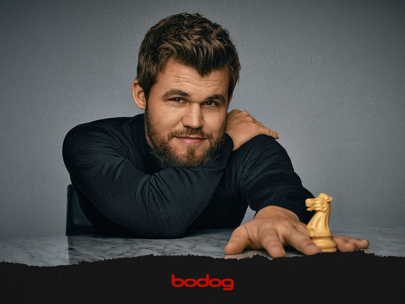

Sven Magnus Øen Carlsen (Tønsberg; 30 de noviembre de 1990) es un Gran Maestro de ajedrez noruego, coronado como el decimosexto Campeón Mundial de Ajedrez. Se proclamó campeón mundial el 28 de noviembre de 2013, a los 22 años, 11 meses y 27 días,1 con lo que fue el segundo campeón más joven de la historia después de Garry Kaspárov. Obtuvo el título al vencer al campeón Viswanathan Anand por 6½-3½ puntos (tres victorias y siete empates) en el encuentro organizado por la FIDE en la ciudad india de Chennai. Es considerado como uno de los mejores jugadores de la historia del ajedrez y un referente para el ajedrez en la actualidad.
Carlsen se convirtió en Gran Maestro a la edad de trece años. En el año 2010 alcanzó la primera posición de la clasificación mundial de la Federación Internacional de Ajedrez. Es el segundo jugador más joven en superar los 2800 puntos Elo, cifra superada por Alireza Firouzja en 2021, y el más joven en lograr el puesto de número uno del mundo al conseguirlo a la edad de diecinueve años y un mes.23 En la lista de abril de 2014, Carlsen alcanzó por primera vez los 2882 puntos Elo, la cifra más alta de todos los tiempos, superando los 2851 que obtuvo Kaspárov en julio de 1999.
